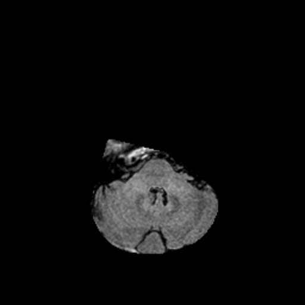
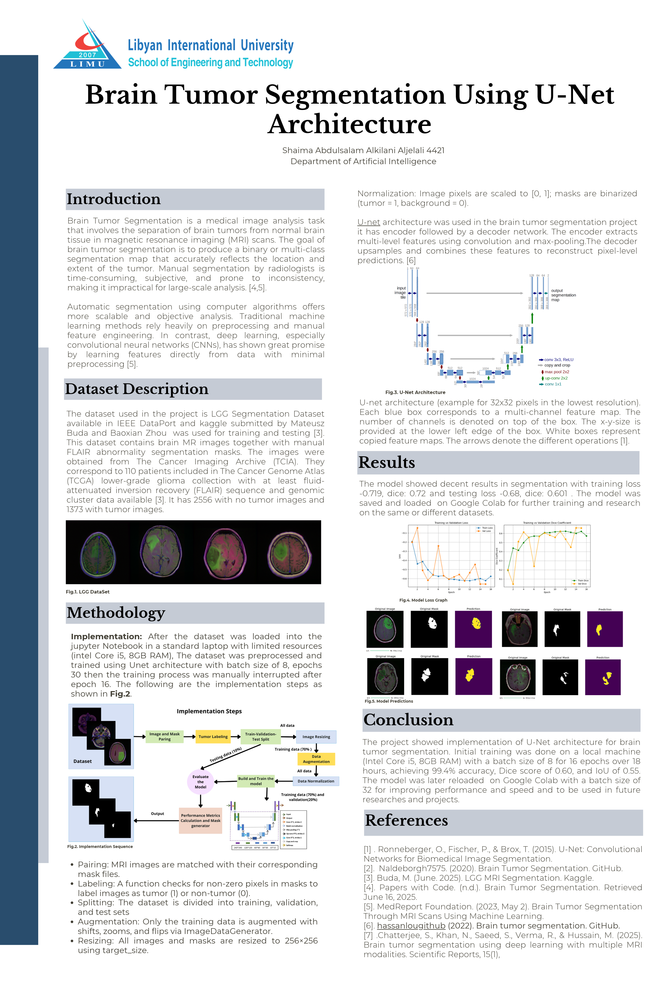

Jisr is a privacy-first, Arabic-native mental health support app that I built with my team during a codeathon. It tackles the "first sentence problem" by turning everyday stress chips and raw thoughts into three tone-adapted message drafts for trusted contacts.
A team capstone project for the Samsung Innovation Campus AI course, forecasting crude oil market trends and inventory levels. We built the project on the U.S. EIA Weekly Petroleum Status Report, which provides thirty-five years of weekly data through a free, stable API . The substitution changes the data, not the problem. The target is the same quantity, the same accounting identity governs it and the same drivers, modelling challenges, and deliverable apply
A research study comparing nine machine learning algorithms on a heart disease dataset, with and without PCA (principal component analysis) for feature engineering.
As project manager, I led a team to design and develop a web-based clinical appointment reservation system using Agile methodology. The project was ranked Best Project among all submissions.
Tools:
Agile methodology
Brain Tumor Segmentation

Segmentation results on MRI scans

Research poster
A U-Net convolutional neural network that segments brain tumors in MRI images, evaluated using Dice score and IoU (Intersection over Union). The work was presented as a research poster.